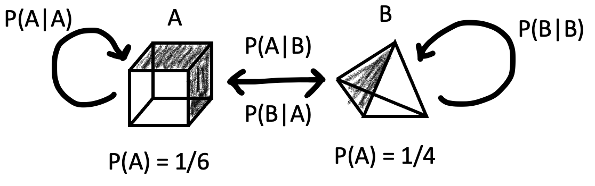
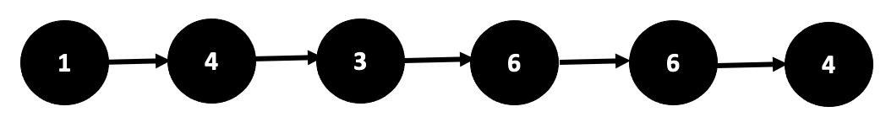
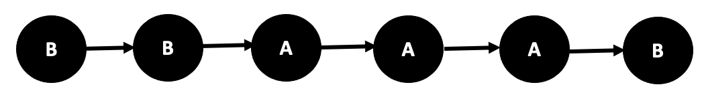
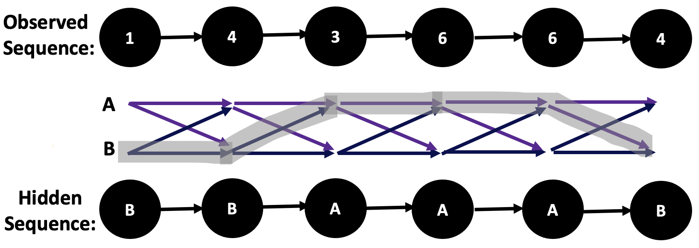
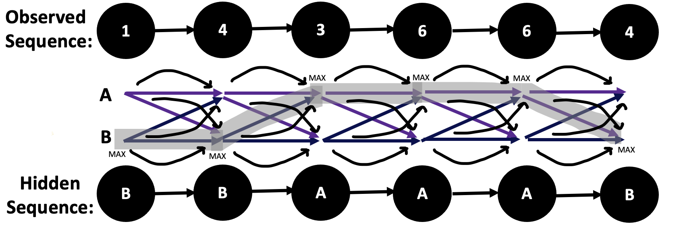
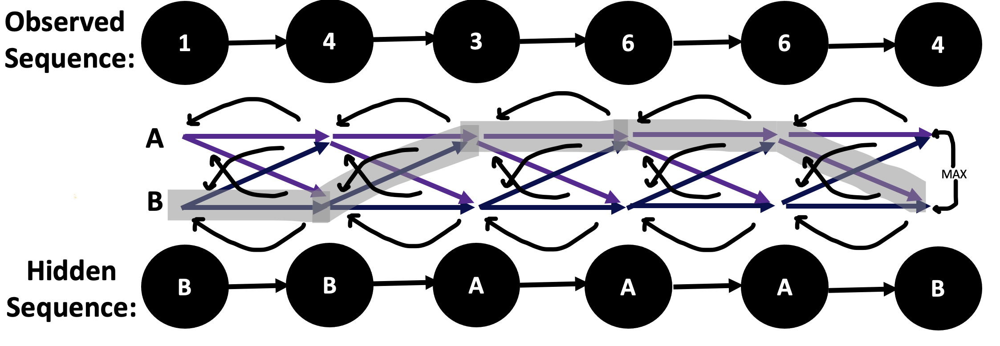
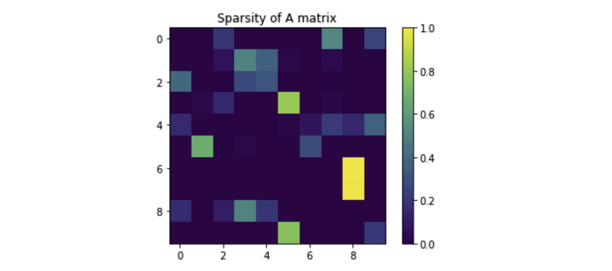
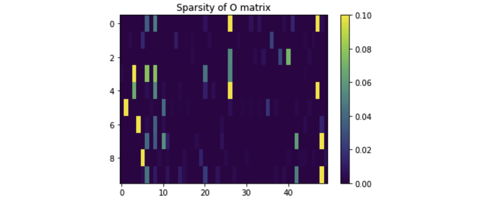
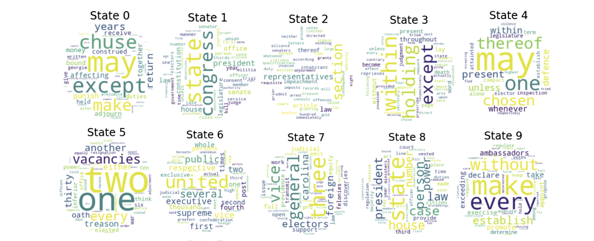

Hidden Markov Models to Generate Shakespearean Sonnets
During the winter quarter of my sophomore year at Caltech, I took CS 155 which is a graduate class on Machine Learning and Data Mining, taught by Professor Yisong Yue. One of our last week-long assignments was to individually create a Hidden Markov Model (HMM) using the Viterbi, backpropagation, and feedforward algorithms. Following this, I formed a group with my friends (Andrew, Basel, and Julen), and we used the HMM's we had individually constructed to find the transition and emission matrices of Shakespearean words from a corpus of texts using the CMU Pronouncing Dictionary. We then used the Baum-Welch algorithm, to generate somewhat meaningful Shakespearean sonnets while preserving the stress-unstress syllable pattern invariant. Here, I have showcased some of the sonnets generated by our algorithm, explained (to some technical details) the underlying algorithms involved in these tasks, and embedded the final reports that we presented to the class.
Sonnet 1
Thou art too great with gentle work did frame
The lovely gaze where every eye doth dwell
Will play the tyrants to the very same,
And that unfair which fairly doth excel:
For never-resting time leads summer on
To hideous winter and confounds him there,
Sap checked with frost and lusty leaves quite gone,
Beauty o’er-snowed and bareness every where:
Then were not summer’s distillation left
A liquid prisoner pent in walls of glass,
Beauty’s effect with beauty were bereft,
Nor it nor no remembrance what it was.
But flowers distilled though they with winter meet,
Leese but their show, their substance still lives sweet.
Sonnet 2
Still doth both painted cheek presents
Spite how some bring thine predicts
Glad it now beseeches pleasantly for
Earth such o'ercharged cries and pricked
Charge or praise ensconce gluttoning attending
I need thou to see another's
Enmity in her will sees bending
And what about the untrimmed others'
In dost eye sees savoured smoke
Your cry now catch'th that twice
Hath she sometime although shamefully broke
Thou devise at night a form
For hours affairs off my told
Is thine you fiery of fold
Sonnet 3
The sight 'tis not sweet as seeing three alone
Death's never comforted of thy acquainted sort
Not henceforth o for mark three is told greetings
Let so all the men in this world seem attained
But hours and hours upon keen eyes
She never said thy luck to thee
Said I when thou an accident unseen
Who felt nothing when thy sweeet been down in me
How seek himself rank the clouds i praise
Up in strange short of thy fair back
Cloud be the soul doth keep times of old days
On where you created air upon me self
To give the argument to yield foiled friends
So edge thine secret win some strange gems
Sonnet 4
Rather than the torment which touches
Memorials which courses some freezing rides
Dost why does me not orient
He writs on to my perforce
Have some fine time now alone
The rude policy they do follow
Verse dost I sight thy line
His food now short and flatter
In the rain you are beyond
What dost fair deserving nights for
Bond with ransom on thy offenders
Of the might for sweet light's
Do excuse towards your fair woman's
Though who should affort this plain
Sonnet 5
Can unto him and mortal gathered hold
Remembered ransom and for do asleep
That ills; how did I not cross afold
The stewards and that stranger are for steep
Is of consumed with others not in shine
And poet's you with which to fair and pride
In any way dost thine and my will bind
For hours it is to wit the rebel-eyed
In how it flattery answers smothered where
The kind of master; a painting's fault
It is his and motion to thine must bear
Be my will thine shall do all to halt
The lusty eyes familiar; my vows they remember
These are thine and to though I will be loud
Sonnet 6
Could you let the youth deep in
Heaven's translated you as doth
Exchanged those prime but kind among
And yet it sets to see me make
Men look canst at that so hugely
Lest forgot my least all time's
Alas hate leads thee to your heart i
Which I need beguiled to make crystal
Ah what jacks the man makes
Seen my fair hair he knows what of me
Thee pebbled you distempered deceived but sweet
Hell see love for hours of mine
For brought; let that eclipse of mine dear
Thus so all and so then
Consider the following set-up. It's actually the simplest Hidden Markov Model. It initializes itself to one state (or one vertex), and then stays at itself with probability \(P(A|A)\) or \(P(B|B)\) and transitions to the other vertex with probability \(P(A|B)\) or \(P(B|A)\). In this model, vertex A represents the uniform distribution from \(\{1,...,6\}\), and vertex B represents the uniform distribution from \(\{1,...,4\}\). So, the initial distribution is \(\pi = (\pi_A, \pi_B)\). In real-world applications, the vertices of the Hidden Markov Model are categories that describe how the output of the model evolves over iterations.

The question that the Hidden Markov Model answers is that if you're given an observed sequence upon sampling from this Markov distribution, say \(1,4,3,6,6,4\), can you predict the most likely sequence and what is the probability of this sequence occurring? Finally, for any element in the distribution that could have belonged to either \(A\) or \(B\), for instance any number from \(\{1,2,3,4\}\), what is the probability that the element belonged to \(A\) (and by contrast, \(B\))?
These questions are actually well-answered by the Hidden Markov Model algorithms. The most likely sequence, given some observations, is predicted by the Viterbi algorithm, and its corresponding likelihood is determined by the Forward algorithm. Finally, the probability that an element from an observation belonged to a specific 'vertex' can be determined by the Backward algorithm. To explain these solutions (the forward, backward and Viterbi algorithms) better, I'm going to introduce some essential notation.
$$\alpha^t(i) = \mathbb{P}(\text{observed sequence, ending in state i at w/t})$$
$$\beta^t(i) = \mathbb{P}(\text{observation after t | ending in state i at w/t})$$
$$\delta^t(i) = \max\limits_{\text{observations}}(\mathbb{P}(\text{observation ending in state i at w/t}))$$
Before I continue, there is one natural question to ask: this 2-vertex Hidden Markov Model is pretty cool, but obviously it doesn't capture the complexity of large datasets. So, maybe consider the \(m\)-vertex Hidden Markov Model. Is there even a unique or existing solution for the most likely forecasted sequence given some predictions? Turns out that the answer to this question is yes! The Hammersley-Clifford Theorem (or the fundamental theorem of random fields) states that the directed graphical model \(V_\Delta(M_D)\) is equal to the image of the parameter space \(\theta\) under the map \(F_D\). Specifically, it states that a probability distribution has a strictly positive mass if and only if it it is a Gibbs random field: its probability density must be factorizable over the cliques (or complete subgraphs) of the graph. The implication of this result is that for all m and for any observed sequence, the \(m\)-vertex Hidden Markov Model has a unique solution for a predicted future sequence, which can be approximated by common algorithmic tools with neat twists.
So, first things first, can we convert our knowledge of these observations to knowledge about the hidden variables behind their system? Can we find out which vertex each of these elements came from? Yes again, and that's exactly what the Viterbi algorithm does.


Implementing the Viterbi Algorithm
The Viterbi algorithm first uses the observations to find the path of maximum probability, which is characterized by:
$$ \text{Path} = \theta'_{\sigma_1 \tau_1}\theta_{\sigma_1 \sigma_2} \theta'_{\sigma_2 \tau_2} \theta_{\sigma_2 \sigma_3} \theta'_{\sigma_3 \tau_3} \theta_{\sigma_3 \sigma_4} \theta'_{\sigma_4 \tau_4}$$

Essentially, the Viterbi algorithm seeks to find the \(\arg\max\limits_y P(y|x)\). There's actually an explicit formula for this value.
$$\begin{aligned}
\arg\max\limits_y P(y|x) &= \arg\max\limits_y \frac{P(y,x)}{P(x)}\\
&= \arg\max\limits_y P(y,x) \\
&= \arg\max\limits_y \log P(x|y) + \log P(y)
\end{aligned}
$$
So, for \(k=1,...,M\), we can use Dynamic Programming to iteratively solve for each \(\log(\hat{Y}^k(Z))\), where Z loops over every possible probability of state, to produce the best \(\hat{Y}^M(Z)\), which is also known as the Mean A Posteriori (MAP) inference. So, the Viterbi algorithm models the pairwise transitions between states. The reason it works is completely justified by the Bayesian principle. For instance, consider a 1st order HMM, characterized by the joint probability distribution
$$
\begin{aligned}
P(x,y) &= P(\text{End}|y^M) \prod\limits_{i=1}^M P(y^i | y^{i-1}) \prod\limits_{i=1}^M P(x^i | y^i) \\
P(x|y) &= \prod\limits_{i=1}^M P(x^i | y^i)
\end{aligned}
$$
Since we know that \(P(y) = P(\text{End}|y^M)\prod\limits_{i=1}^M P(y^i | y^{i-1})\), we can use this characterization to recover the original Bayes' formula, which states that:
$$ P(x|y) = \frac{P(x,y)}{P(y)} $$
So, what is the actual algorithm? Given an input of the observation space \(O = \{o_1, ..., o_N\} \subseteq S\), a state space \(S = \{s_1, ..., s_K\}\), an array of initial possibilities \(\Pi = (\pi_1,...\pi_K)\) such that \(x_1 = s_i\), a sequence of observations \(Y = (y_1, ..., y_T)\) such that \(y_t = o_i\) if the observation at time \(t\) is \(o_i\), a transition matrix \(A\) of size \(K\times K\) such that \(A_{ij}\) stores the transition probability of transiting from state \(s_i\) to state \(s_j\), and an emission matrix \(B\) of size \(K\times N\) such that \(B_{ij}\) stores the probability of observing \(o_j\) from state \(s_i\), the Viterbi algorithm outputs the most likely hidden state sequence \(X = (x_1, ..., x_T)\).
Implementing the Viterbi Forward and Backward Algorithm
Here are some conceptual ideas of what happens in the Forward and Backward algorithms, respectively.


So, for the forward algorithm, the goal is to solve for every \(\alpha_z(i) = P(x^{1:i},y^i=Z|A,O)\). One naive (exponential time) solution is to let
$$ \alpha_z(i) = P(x^{1:i},y^i=Z|A,O) = \sum\limits_{y^{1:i-1}} P(x^{1:i},y^i=Z,y^{1:i-1}|A,O)$$
A better solution is to use DP and recursively solve for \(\alpha_z(i) \). So,
$$
\begin{aligned}
\alpha_z(1) &= P(y^1 = z|y^0) P(x^1 | y^1 = z) = O_{x^1, z} A_{\text{z,start}} \\
\alpha_z(i+1) &= O_{x^{i+1},z} \sum\limits_{j=1}^L \alpha_j(i) A_{z,j}
\end{aligned}
$$
Similarly, for the backward algorithm, the goal is to solve for every \(\beta_z(i) = P(x^{1+i:M}|y^i=Z,A,O)\). The naive (exponential time) solution is to let
$$ \beta_z(i) = P(x^{i+1:M}|y^i=Z|A,O) = \sum\limits_{y^{i+1:L}} P(x^{i+1:M},y^{i+1:M} | y^i = Z, A, O)$$
A better solution is to use DP and recursively solve for \(\beta_z(i) \). So,
$$
\begin{aligned}
\beta_z(M) &= 1 \\
\beta_z(i) &= \sum\limits_{j=1}^L \beta_j(i+1) A_{j,z} O_{x^{i+1},j}
\end{aligned}
$$
Here's the code that computes these functions:
def forward(self, x, normalize=False):
alphas = [[0. for _ in range(self.L)] for _ in range(len(x) + 1)]
betas[a] = [val / sum(betas[a]) for val in betas[a]]
return betas
Supervised Learning
We can use the supervised learning framework to train the HMM. So, given \(S = \{(x_i,y_i)\}_{i=1}^N\), our goal is to use \(S\) to estimate the maximum likelihood \(P(x,y)\), where
$$P(x,y) = P(\text{End}|y^M)\prod\limits_{i=1}^M P(y^i | y^{i-1}) \prod\limits_{i=1}^M P(x^i | y^i)$$
So, to do this, we define the Transition matrix \(A\) and the Observation matrix \(O\), where
$$ A_{ab} = P(y^{i+1}=a|y^i = b)$$
$$ O_{wz} = P(x^i=w|y^i=z)$$
Using this notation, we have that
$$ \begin{aligned}
P(x,y) &= P(\text{End}|y^M)\prod\limits_{i=1}^M P(y^i|y^{i-1})\prod\limits_{i=1}^M P(x^i|y^i) \\
&= A_{\text{End},y^M}\prod\limits_{i=1}^M A_{y^i,y^{i-1}} \prod\limits_{i=1}^M O_{x^i,y^i}
\end{aligned}
$$
To find the maximum likelihood probability, we have that
$$ \arg\max\limits_{A,O} \prod\limits_{(x,y)\in S} P(x,y) = \arg \max\limits_{A,O} \prod\limits_{(x,y)\in S} P(\text{End}|y^M)\prod\limits_{i=1}^M P(y^i|y^{i-1})\prod\limits_{i=1}^M P(x^i | y^i)$$
We can use supervised learning to estimate each component separately. So,
$$ A_{ab} = \frac{\sum\limits_{j=1}^N \sum\limits_{i=0}^{M_j} \mathbb{1}_{[(y_j^{i+1}=a)\wedge (y_j^i=b)]}}{\sum\limits_{j=1}^N \sum\limits_{i=0}^{M_j}\mathbb{1}_{[y^i_j=b]}}$$
$$ O_{wz} = \frac{\sum\limits_{j=1}^N \sum\limits_{i=1}^{M_j} \mathbb{1}_{[(x_j^{i}=w)\wedge (y_j^i=z)]}}{\sum\limits_{j=1}^N \sum\limits_{i=1}^{M_j}\mathbb{1}_{[y^i_j=z]}}$$
Here's the code that executes the supervised learning framework for the Hidden Markov Model:
def supervised_learning(self, X, Y):
A = np.zeros((self.L, self.L))
B = np.zeros((self.L, self.L))
for state_seq in Y:
for i in range(len(state_seq) - 1):
A[state_seq[i]][state_seq[i+1]] += 1
for i in range(len(A[0])):
B[:,i] = [probability/sum(A[:,i]) for probability in A[:,i]]
self.A = B
O = [[0 for _ in range(self.D)] for _ in range(self.L)]
for a in range(len(list(X))):
for state in range(len(list(Y[a]))):
O[Y[a][state]][X[a][state]] += 1
for i in range(len(O)):
self.O[i] = [probability/sum(O[i]) for probability in O[i]]
There are some glaring assumptions that go along with the supervised learning framework, that are, in most cases, undesirable. For instance, we assume that everything can be decomposed to a pair of products: that \(P(y^{i+1}=a|y^i=b)\) is independent. This is a crucial assumption since it gives us that
$$P(x,y) = P(\text{End}|y^M)\prod\limits_{i=1}^M P(y^i | y^{i-1}) \prod\limits_{i=1}^M P(x^i | y^i)$$
Another crucial, albeit undesirable, assumption is that the model can easily learn (to an arbitrarily high precision) the frequentist statistics of how often \(y^{i+1}=a\) when \(y^i=b\) over the training set.
Unsupervised Learning
Due to undesirable assumptions of supervised learning that are mentioned in the previous paragraph, we instead consider the framework of unsupervised learning. Consider the case in which there are no y's. So, \(S = \{x_i\}_{i=1}^N\). Can we still estimate \(P(x,y)\)? Again, the answer is yes! Note that
$$ \arg \max \prod\limits_i P(x_i) = \arg \max \prod\limits_i \sum\limits_y P(x_i, y)$$
So, we now re-define our matrix protagonists \(A\) and \(O\) to:
$$ A_{ab} = P(y^{i+1}=a|y^i = b)$$
$$ O_{wz} = P(x^i=w|y^i=z)$$
We then use the Unsupervised Learning equivalent of the Viterbi algorithm - the Baum-Welch algorithm - to train the Hidden Markov Model. Basically, it initializes \(A\) and \(O\) randomly using the framework above. It then predicts the probabilities of \(y\) for each training \(x\), in what's called the expectation step. In then uses the \(y's\) to estimate the new \(A\) and \(O\) in what's called the maximization step. It then repeats this procedure until the estimates converge onto a value.
So, in the expectation step, we are given \(A,O\) and \(x=(x^1,...,x^M)\) and need to predict \(P(y^i)\) for each \(y=(y^1,...,y^M)\), while encoding the current model's beliefs and marginal distribution about \(y\).
Next, in the maximization step, we seek to find the maximum likelihood over the marginal distribution using a dynamic programming approach:
$$ A_{ab} = \frac{\sum\limits_{j=1}^N \sum\limits_{i=0}^{M_j} P(y_j^i=b, y_j^{i+1}=a)}{\sum\limits_{j=1}^N \sum\limits_{i=0}^{M_j} P(y^i_j=b)}$$
$$ O_{wz} = \frac{\sum\limits_{j=1}^N \sum\limits_{i=1}^{M_j} \mathbb{1}_{[x_j^{i}=w]} P(y_j^i=z)}{\sum\limits_{j=1}^N \sum\limits_{i=1}^{M_j} P(y^i_j=z)}$$
To explain the underlying algorithm further, I'm going to introduce some notation. Let \(\alpha_z(i)\) be the probability of observing prefix \(x^{1:i}\) and having the i-th state be \(y^i=z\), and let \(\beta_z(i)\) be the probability of observing suffix \(x^{1+i:m}\) given the i-th state being \(y^i = z\), where
$$ \alpha_z(i) = P(x^{1:i},y^i=Z|A,O)$$
$$ \beta_z(i) = P(x^{1+i:M}|y^i=Z,A,O)$$
So, to compute the marginals, we can combine these two terms to get:
$$P(y^i = z | x) = \frac{\alpha_z(i) \beta_z(i)}{\sum\limits_{z'} a_{z'}(i)\beta_{z'}(i)}$$
$$P(y^i = b, y^{i-1}=a | x) = \frac{a_a(i-1)P(y^i=b|y^{i-1}=a)P(x^i|y^i=b)\beta_b(i)}{\sum\limits_{a',b'}a_{a'}(i-1)P(y^i=b'|y^{i-1}=a')P(x^i|y^i=b')\beta_{b'}(i)}$$
Here's the code that does exactly that:
We use the unsupervised learning framework in conjunction with the forward-backward algorithm, instead of the separate forward and backward algorithm that is typically used in conjunction with the Viterbi algorithm. The forward-backward algorithm has 3 key traits:
It runs forward: \(\alpha_z(i) = P(x^{1:i},y^i=Z|A,O)\)
It runs backward: \(\beta_z(i) = P(x^{1+i:M}|y^i=Z,A,O)\)
For each training \(x = (x^1,...,x^M)\), it computes each \(P(y^i)\) for each \(y = (y^1, ..., y^M)\)
$$ P(y^i=z|x) = \frac{\alpha_z(i)\beta_z(i)}{\sum\limits_{z'}\alpha_{z'}(i)\beta_{z'}(i)}$$
Generate Emission
We then use these above algorithms to determine the probabilities of forecasted sequences to find the maximum-likelihood sequence:
We then trained the HMM on the corpus of the constitution of the United States, and generated some sample sentences.
Sample Sentence 1
Hundred and not its public states shall state between number of thing but approved their common prescribe consequence iv he shall regulate the conventions and no...
Sample Sentence 2
A they state of no have but thereof declare of in of such be laws shall a to day entitled proceedings of enumeration any privileged...
Sample Sentence 3
From foreign of all two to prescribed as whereof laws and to not first states objections elected publish south state and senator prince all no...
Sample Sentence 4
Electors shall jersey taken have thousand on whose and the officer constitute to be weights the privilege a for of the the bill adhering subject...
Sample Sentence 5
From be shall given under if shall reserving the united may public and on both protect to any united of the constitution shall as of...
Comments about the Sparsity of the A and O matrix
Some interesting insights about the transition matrices \(A\) and \(O\) are that they are extremely sparse. This is actually an expected result, since the HMM enforces a strong regularization through the Baum-Welch (and, even Viterbi) algorithms. The sparsity of these matrices confirms that these algorithms are not overfitting on the dataset particularly, and are thus still capable of generating unique samples from the distribution.


Visualizations: The Data Wordcloud and How the HMM Transitions between Genres
Here is a word-cloud that we generated of the dataset (the corpus of the United States constitution).
We then generated a word-cloud of the genres of the dataset and categories of words, allowing the HMM to discover 10 hidden states from the corpus.

Finally, I mapped the process of how the HMM transitioned between categories of words when it began the process of generating unique phrases.
Finally, we applied the Hidden Markov Model to a new dataset - a corpus of everything Shakespeare ever wrote. We applied it in conjunction with the CMU pronouncing dictionary to determine the stresses of each word to apply further constraints (a 10-syllable count per phrase, a stress-unstress pattern, and an iambic pentameter). We then used an RNN (recurrent neural network) to build a LSTM (long short-term memory) to check that collections of words that were moderately longer made sense (within sufficiently large windows).